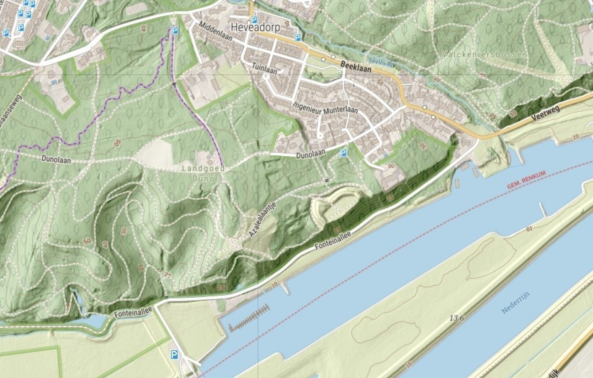

Maps
Describes how to use the prepared data to create maps.

1. Mapnik Test
Directly render tiles with Mapnik Python script. Output (JPEG) will be
under tools/mapnik/output/.
1
2
3
4
5
6
7
8
9
10
11
12
13
14
15
16
17
18
19
20
21
22 | cd tools
# Render multiple tiles at different zooms per category
./mapnik-render-cat.sh roads | resident | rural
# Render any single tile by zoom, x, y
./mapnik-render-tile.sh z x y
# Render any map by width,height,bbox (lowerleft, upperright) and style
# Example:
# ./mapnik-render-map.sh 2000 1000 131000 480000 131500 480500 map-1.png map5topo.xml
./mapnik-render-map.sh w h llx lly urx ury outfile style
# Advanced: use simple WMS
./mapnik-run-wms.sh
# then find WMS at http://localhost:8001/fm/wms?REQUEST=GetCapabilities&SERVICE=WMS
# use capitals for WMS query parms!
# OR similar with docker compose
# Mainly for debug: https://www.jetbrains.com/help/pycharm/using-docker-as-a-remote-interpreter.html
cd tools/mapnik
docker compose up
|
2. Tile Seeding
Create tile caches (GeoPackages).
During development:
| # For local quick caching: use ./seed-direct.sh
cd services/mapproxy/seed
# Entire netherlands, NB takes extremely long!
./seed-rd.sh
# Muiden Area, takes about 30mins-1h depending on system
./seed-muiden-rd.sh
|
For production the workflow is more extended: "guarded seed", verify seeded cache, install cache.
1
2
3
4
5
6
7
8
9
10
11
12
13
14
15
16
17
18 | # For production guarded (some procs may die) caching: use ./seed-guarded.sh
# These create caches under /var/map5/mapproxy/cache/gpkg/<layer>_seed/
# Workflow: first seed, verify cache, then install.
# Single tilecache
./seed-guarded.sh map5topo_rd
# ALL tilecaches:
./seed-all.sh
# Verify tilecache results
./verify-cache.sh <cache> <grid>
# Example
./verify-cache.sh map5topo_seed dutch_grid_lev13
# Install seeded cache
./install-seeded.sh <cache> <grid>
./install-seeded.sh map5topo dutch_grid_lev13
|
3. Test the Services
Several apps are available.
- Run service stack:
cd services; ./start.sh
- Local: http://localhost:8000/mp (MapProxy) http://localhost:8000/app (apps) http://localhost:8000/pgadmin (pgadmin)
- Fastmap: WMS with Mapnik backend: http://localhost:8000/fm/wms?REQUEST=GetCapabilities
- Production: https://topo.map5.nl/mp https://topo.map5.nl/app
📅 Created 0 days ago
✏️ Updated 0 days ago
{kind=link}